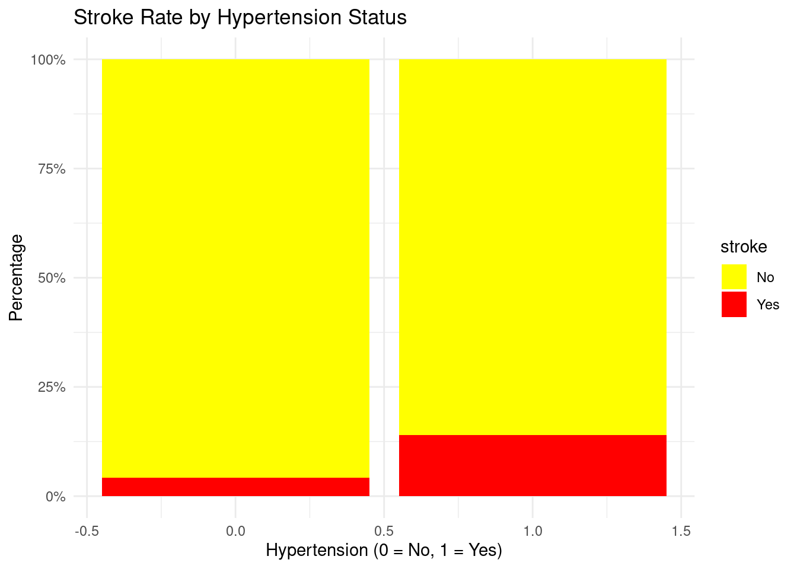
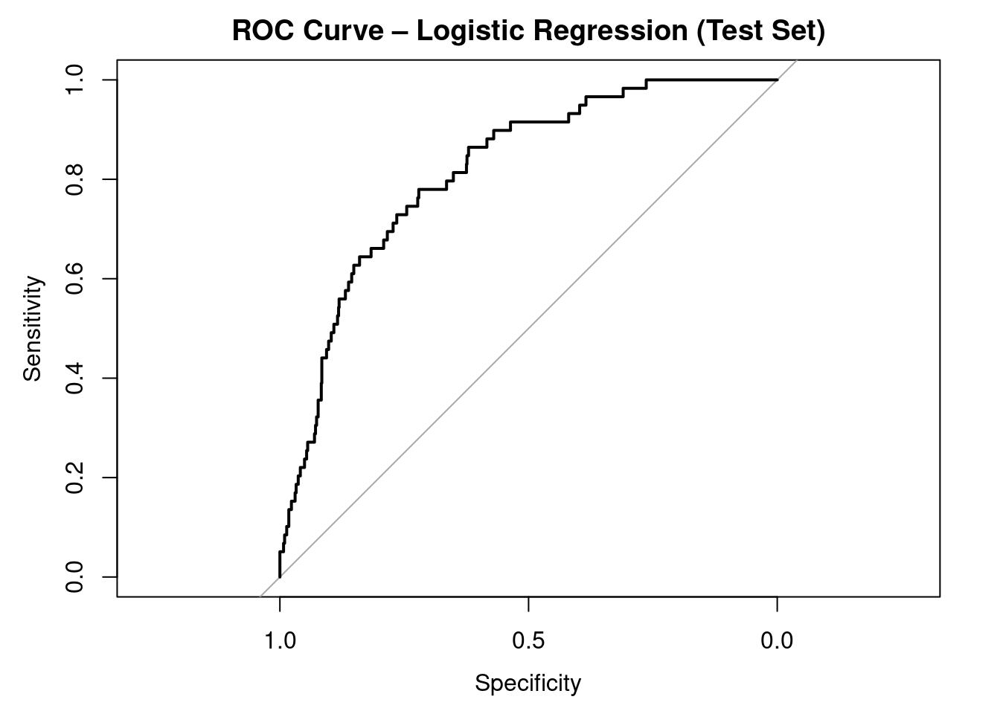
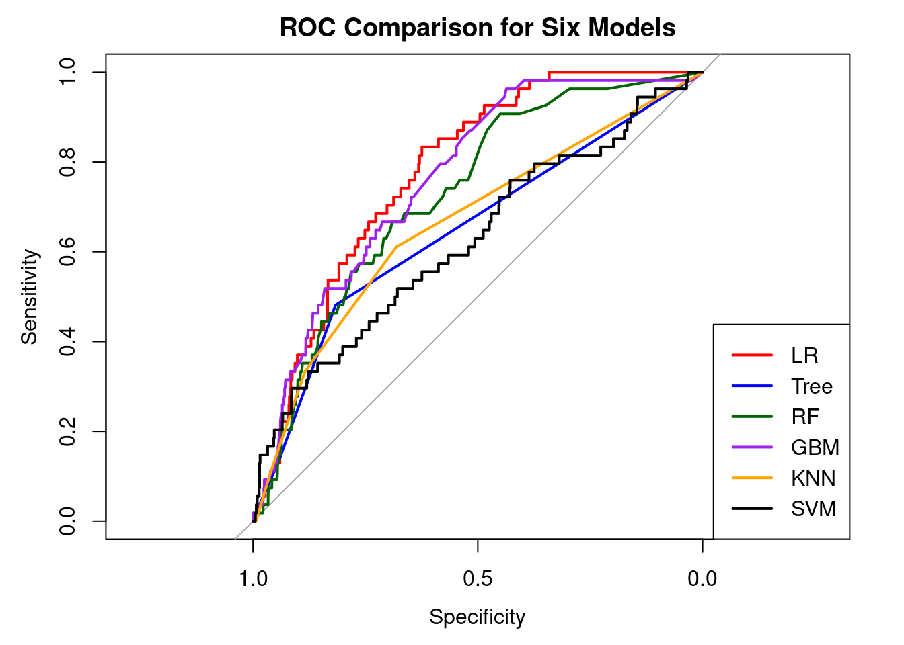

Master of Data Science Program @ The University of West Florida (UWF)
Shree Krishna M.S Basnet
Supervisor: Dr. Cohen
Introduction
Stroke affects people all around the world, resulting in numerous deaths and disabilities.[1]. If we are able to detection stroke early for those at increased risk is will be amazing for prevention and prompt intervention because stroke frequently happens quickly and can cause long-term neurological disability. Clinicians and public health experts can measure individual-level risk and target high-risk populations for clinical management and lifestyle counseling by using data-driven risk prediction models.
Logistic Regression (LR) is one of the most widely used approaches for modelling binary outcomes such as disease is present in human or not[2]. It extends linear regression to cases where the outcome is categorical and provides interpretable coefficients and odds ratios that describe how each predictor is associated with the probability of the event. LR has been applied across a wide range of domains, including child undernutrition and anaemia[3], road traffic safety[4–6], health-care utilisation and clinical admission decisions[7], and fraud detection[8]. These applications highlight both the flexibility of LR and its suitability for real-world decision-making problems.
In this project, we analyse a publicly available stroke dataset that includes key demographic, behavioural, and clinical predictors such as age, gender, hypertension status, heart disease, marital status, work type, residence type, smoking status, body mass index (BMI), and average glucose level. These variables are commonly reported in the stroke and cardiovascular literature as important determinants of risk. Using this dataset, we first clean and recode the variables into appropriate numeric formats and then develop a series of supervised learning models for stroke prediction.
Logistic Regression is used as the primary, interpretable baseline model, but its performance is compared against several more complex machine-learning techniques, including Decision Tree, Random Forest, Gradient Boosted Machine, k-Nearest Neighbours, and Support Vector Machine (radial). Model performance is evaluated using accuracy, sensitivity, specificity, ROC curves, AUC, and confusion matrices. The main objectives are to identify the most influential predictors of stroke and to determine whether advanced machine-learning models offer meaningful improvements over Logistic Regression for classification of stroke risk in this dataset.
Methodology
This part explains about our stoke dataset, variables, preprocessing steps, logistic regression formulation, and the machine-learning modelling framework used to compare classifiers.
Our datset contains 5,110 observations and 11 predictors commonly associated with cerebrovascular risk. After cleaning missing and inconsistent entries (e.g., “Unknown”, “N/A”, or rare textual categories such as “children” and “other”), a final dataset of 3,357 individuals remained for analysis. The cleaned dataset is stored in the object strokeclean.
Respose we get is in binary so logestic regression is the best approach to observe whether the patient has had stroke=1 or not stroke=0[hosmer2013applied?,james2021isl?]
Variables
The key predictors are listed below.
Variable
Type
Description
age
Numeric
Age of the individual (years)
gender
Categorical (1=Male, 2=Female)
Biological sex
hypertension
Binary (0/1)
Prior hypertension diagnosis
heart_disease
Binary (0/1)
Presence of heart disease
ever_married
Binary
Marital status
work_type
Categorical (1–4)
Employment category
Residence_type
Binary (1=Urban, 2=Rural)
Place of residence
smoking_status
Categorical
Never/Former/Smokes
bmi
Numeric
Body Mass Index
avg_glucose_level
Numeric
Average glucose level
stroke
Binary outcome (0=No, 1=Yes)
Stroke occurrence
Stroke is a highly unbalanced outcome variable: - Yes (stroke): about 5% - No (no stroke): around 95%
Because it is possible to achieve high overall accuracy by merely forecasting the majority class, this class imbalance directly affects model evaluation. Because of this, in addition to accuracy, we also concentrate on sensitivity, specificity, ROC curves, AUC, and Youden’s J statistic.
Dataset Prepration To guarantee model validity and stop data leakage, data preprocessing is performed.[9].
Among the steps were:
Elimination of non-predictive identifiers (patient ID)
Transforming categorical variables into dummy numerical representations
Managing uncommon or irregular categories (e.g., “Other” gender values handled as absent)
BMI, glucose, and age conversion to numerical
Rows with unintelligible labels (“Unknown,” “N/A”) are removed.
Valid range and consistency verification
After recoding, missing values might be imputed or removed.
During splitting, stratified sampling is used to maintain the stroke/no-stroke ratio[6].
The outcome stroke was defined as a factor with levels “No” and “Yes” in the cleaned dataset strokeclean.
To check sample performance, the data were split into training and test sets. For the baseline logistic regression model, a simple random 70/30 split was used. For the full machine-learning comparison, a stratified partition (via caret::createDataPartition) was applied to preserve the stroke/no-stroke ratio in both sets.
Logistic regression model
Let \(Y_i\) denote the stroke status for patient \(i\), where
Here, \(\beta_0\) is the intercept, \(\beta_j\) is the change in log-odds of stroke for a one-unit increase in predictor \(x_j\), holding other variables constant.
Exponentiating \(\beta_j\) gives the odds ratio (OR): \[
\text{OR}_j = e^{\beta_j},
\]
which represents the multiplicative change in the odds of stroke for a one-unit increase in \(x_j\).
Model Estimation
Let \(\boldsymbol{\beta} = (\beta_0, \beta_1, \ldots, \beta_p)^\top\) denote the vector of regression coefficients. For independent observations, the likelihood of the data is \[
L(\boldsymbol{\beta})
= \prod_{i=1}^{n}
\pi(\mathbf{x}_i)^{\,y_i}
\left[1 - \pi(\mathbf{x}_i)\right]^{\,1-y_i},
\]
where \(\pi(\mathbf{x}_i) = P(Y_i = 1 \mid \mathbf{x}_i)\).
The maximum likelihood estimate \(\hat{\boldsymbol{\beta}}\) is the value of \(\boldsymbol{\beta}\) that maximizes \(\ell(\boldsymbol{\beta})\). In R, this optimization is carried out automatically using glm(..., family = binomial)
Machine learning models and evaluation
Six supervised models were fitted using the caret framework in order to determine whether more sophisticated methods may significantly enhance stroke classification:
Logistic Regression (LR)
Decision Tree (rpart)
Random Forest (RF)
Gradient Boosted Machine (GBM)
k-Nearest Neighbours (k-NN)
Support Vector Machine with radial kernel (SVM-Radial)
All models used the same 70% training / 30% test split and a consistent cross-validation procedure to ensure fair comparison. To guarantee a fair comparison, all models employed the same cross-validation process and a 70% training/30% test split.
Data Splitting and Model Fitting in R
The cleaned dataset is stored in the object strokeclean, where the outcome variable is stroke (0 = No stroke, 1 = Stroke), and predictors include age, hypertension, heart_disease, avg_glucose_level, bmi, smoking_status, and others.
First, the dataset is randomly divided into a training set (70%) and a test set (30%) to evaluate out-of-sample performance, logistic regression model is then fitted on the training data:
From this model, estimated odds ratios and 95% confidence intervals are computed as:
Model Predictions and Performance Measures
Predicted probabilities on the test set are obtained as:
Using a classification threshold \(c = 0.5\), the predicted class for patient \(i\) is
These metrics are widely used in stroke-risk modeling literature and as per article it is often used to find optimial classidfication threshhold.[6].
Analysis
Before starting to generate predictive models, an exploratory analysis was conducted to understand the distribution, structure, and relationships within the cleaned dataset (N = 3,357). This step is crucial in rare-event medical modeling because data imbalance, skewed predictors, or correlated variables can directly influence model behavior and classification performance.
Distribution of Key Continuous Variables
Histograms were used to assess the spread of the primary numeric predictors (Age, BMI, and Average Glucose Level). These variables demonstrate clinically expected right-skewness, particularly glucose and BMI, consistent with published literature on metabolic and cardiovascular risk distributions.
Our histograms is generating valuable variation of primary numerical predictors.
Age is distributed with phase of life mainly from teenage till old age, with most individuals concentrated between 40–70 years, reflecting a typical mid-to-older population where stroke risk naturally increases.
BMI displays a moderately right-skewed pattern, with most values falling between 22–35, consistent with a population where overweight status is common but extreme obesity is rare.
The average glucose level is substantially skewed to the right, with many people having glucose levels below 120 but a large tail that extends beyond 200, suggesting the presence of people with metabolic problems or possibly diabetes, which is a significant clinical risk factor for stroke.
When combined, these distributions show common clinical trends and offer a strong basis for predictive modeling.
Distribution of Key Categorical Variables
Bar charts help visualize population composition. The dataset shows more females than males, a balanced rural–urban distribution, and substantial variation in work type and smoking behavior.
Bar plots were created to visualize demographic and behavioral attributes.
Gender: Females account for a significantly bigger proportion of the sample than males, which may influence overall stroke estimates and must be addressed when interpreting model results.
Smoking status shows a large “never smoked” group
Residence Type: Urban and rural residents are almost evenly represented, suggesting a balanced dataset with respect to geographical living conditions
Overall, these distributions show that the dataset includes a diverse mix of demographic and lifestyle categories, helping ensure that the predictive models capture variation across different subpopulations.
The correlation heatmap shows that relationships among the key predictors are generally weak to moderate, indicating low multicollinearity and confirming that these variables can be safely used together in a logistic regression model.
Age, hypertension, and heart disease all have small positive connections (about 0.24-0.26), which is to be expected given that cardiovascular problems tend to worsen as people age.
The average glucose level displays minor positive associations with age and hypertension, indicating known metabolic risk patterns.
BMI shows almost no correlation with the other predictors, suggesting it contributes unique information.
No correlation values approach levels that would threaten model stability (e.g., > 0.7).
Overall, the predictors are reasonably independent, supporting their combined use in further statistical and machine-learning models.
Stroke rates for key risk factors
Hypertension and stroke
ggplot(strokeclean, aes(x = hypertension, fill = stroke)) +geom_bar(position ="fill") +scale_y_continuous(labels = scales::percent) +labs(title ="Stroke Rate by Hypertension Status",x ="Hypertension (0 = No, 1 = Yes)",y ="Percentage") +scale_fill_manual(values =c("No"="yellow", "Yes"="red")) +theme_minimal()

Interpretation
Hypertensive individuals have a noticeably higher percentage of stroke events compared with non-hypertensive individuals, reinforcing hypertension as a major modifiable risk factor.
Individuals with heart disease show substantially higher stroke rates than those without heart disease, consistent with clinical understanding that cardiovascular disease and stroke share many underlying mechanisms.
Both former and current smokers exhibit higher stroke percentages than never-smokers, illustrating the lasting impact of smoking on vascular risk. This supports public health messages around smoking cessation and risk reduction.
The logistic regression findings demonstrate how each predictor impacts the likelihood of having a stroke, while keeping other variables constant:
Age (OR = 1.075, CI: 1.059–1.093) Age is the strongest continuous predictor. Each additional year of age increases the odds of stroke by about 7.5%, and the confidence interval does not include 1, indicating strong statistical significance.
Hypertension (OR = 1.577, CI: 0.996–2.450) Individuals with hypertension have roughly 58% higher odds of stroke compared to those without hypertension, although the lower CI bound is just below 1. This suggests a borderline significant effect, but clinically important.
Heart disease (OR = 1.628, CI: 0.942–2.733) Heart disease increases stroke odds by about 63%, but the CI includes 1, implying the association is positive but not statistically strong in this dataset.
Average glucose level (OR = 1.004, CI: 1.000–1.007) Higher glucose levels are associated with slightly increased stroke risk. Though the effect is small, the CI indicates marginal significance, aligning with known metabolic risk patterns.
BMI (OR = 1.007, CI: 0.975–1.037) BMI shows almost no meaningful effect on stroke risk, and the CI overlaps 1. This predictor does not significantly influence stroke likelihood in this dataset.
Smoking (Fsmoked OR = 1.263; Smokes OR = 1.598)
Former smokers have 26% higher odds, but CI crosses 1 → weak evidence.
Current smokers have ~60% higher odds, but CI still overlaps 1 → suggests increased risk but not statistically conclusive here.
Gender (Female) (OR = 1.259; CI: 0.842–1.903) Females show slightly higher odds, but this effect is not statistically significant.
Ever married (OR = 1.126; CI: 0.590–2.013) Marital status has no clear effect on stroke odds in this sample.
Model predictions and performance on the test set
library(caret)# 1) Predicted probabilities from logistic regressionstroke_test$pred_prob <-predict( fit_glm,newdata = stroke_test,type ="response")# 2) Make sure the TRUE outcome is a factor with levels No / Yesstroke_test$stroke <-factor(stroke_test$stroke,levels =c("No", "Yes"))# 3) Class predictions at threshold c = 0.5stroke_test$pred_class <-ifelse(stroke_test$pred_prob >=0.5, "Yes", "No")stroke_test$pred_class <-factor(stroke_test$pred_class,levels =c("No", "Yes"))# 4) Confusion matrix: positive = "Yes"cm <-confusionMatrix(data = stroke_test$pred_class,reference = stroke_test$stroke,positive ="Yes")cm
Confusion Matrix and Statistics
Reference
Prediction No Yes
No 949 58
Yes 0 1
Accuracy : 0.9425
95% CI : (0.9262, 0.956)
No Information Rate : 0.9415
P-Value [Acc > NIR] : 0.4811
Kappa : 0.0314
Mcnemar's Test P-Value : 7.184e-14
Sensitivity : 0.0169492
Specificity : 1.0000000
Pos Pred Value : 1.0000000
Neg Pred Value : 0.9424032
Prevalence : 0.0585317
Detection Rate : 0.0009921
Detection Prevalence : 0.0009921
Balanced Accuracy : 0.5084746
'Positive' Class : Yes
From the confusion matrix, the following performance metrics are defined:
Positive Predictive Value (Precision)\[
\text{PPV} =
\frac{TP}{TP + FP}.
\]Negative Predictive Value (NPV)
\[
\text{NPV} =
\frac{TN}{TN + FN}.
\]
Interpretation of Logistic Regression Performance (Test Set)
Accuracy = 94.25% The model correctly classified most cases, mainly because the dataset is highly imbalanced (only ~6% stroke cases). High accuracy here does not mean good stroke detection.
Sensitivity (True Positive Rate) = 0.017 The model correctly identified only 1 out of 59 actual stroke cases (≈1.7%). → This shows the model fails to detect stroke cases, which is common in rare-event medical datasets.
Specificity (True Negative Rate) = 1.00 The model correctly classified all non-stroke cases. → It is extremely good at predicting “No stroke,” which dominates the dataset.
Positive Predictive Value (Precision) = 1.00 When the model predicts “Yes,” it is always correct — but it predicted “Yes” only once. High precision is misleading because the model rarely predicts a positive case.
Negative Predictive Value = 0.942 Most “No” predictions are correct, matching the overall class imbalance.
Kappa = 0.031 Kappa measures agreement beyond chance. A value near zero shows the model performs only slightly better than random when considering class imbalance.
Balanced Accuracy = 0.508 When weighting sensitivity and specificity equally, the model performs at chance level (~50%). → Confirms that stroke detection is weak.
McNemar’s Test p < 0.0001 Strong evidence that the model’s errors are systematically skewed—it overwhelmingly predicts “No stroke.”
The logistic regression model achieves high accuracy only because the negative class dominates.It detects almost no true stroke cases, giving extremely poor sensitivity. It performs well for the majority class (non-stroke), but fails for the minority class (stroke).
These results highlight the challenge of severe class imbalance, which requires additional techniques (e.g., SMOTE, class weights, resampling) to improve medical-event prediction.
ROC curve and AUC for the logistic model
# Sanity checktable(stroke_test$stroke)
No Yes
949 59
# ROC and AUC using factor outcome directlyroc_glm <-roc(response = stroke_test$stroke, # factor: No / Yespredictor = stroke_test$pred_prob, # predicted probabilities from glmlevels =c("No", "Yes"), # "No" = control, "Yes" = casedirection ="<")auc(roc_glm)
Area under the curve: 0.8154
plot(roc_glm, main ="ROC Curve – Logistic Regression (Test Set)")

A higher AUC (closer to 1) indicates better discrimination between stroke and non-stroke cases. Values substantially above 0.5 indicate that the model performs better than random classification.
Interpretation of ROC Curve and AUC (Test Set)
The ROC curve evaluates the model’s ability to distinguish between stroke and non-stroke cases across all possible classification thresholds, not just the default 0.5 cutoff.
The AUC = 0.815, which indicates good discriminative performance.
AUC = 0.5 is no discrimination (random guessing)
AUC = 0.7–0.8 is acceptable
AUC = 0.8–0.9 is good
AUC > 0.9 is excellent
Even though the confusion matrix showed poor sensitivity at threshold 0.5, the AUC reveals that the model can separate the two classes reasonably well if a better threshold is chosen.
The strong AUC compared to weak sensitivity highlights the impact of severe class imbalance and the importance of customizing the probability cutoff for medical prediction tasks.
Overall, the ROC analysis suggests that the logistic model contains useful predictive signal, but performance for detecting stroke can be improved with:
Across all six models, overall accuracy and specificity are very high, mainly because the dataset is highly imbalanced (only ~6% stroke cases). However, sensitivity is extremely low across every model, meaning that almost none of the models correctly identify stroke cases.
Logistic Regression (AUC = 0.78) and GBM (AUC = 0.76) show the best overall discrimination, indicated by the highest AUC values. These models are better at ranking high-risk vs. low-risk individuals, even though they still fail at detecting positives under the default 0.5 threshold.
Tree-based models (Decision Tree, Random Forest, GBM) achieve slightly higher sensitivity than LR, but only marginally (still around 1–2%). KNN and SVM detect 0 stroke cases at this threshold, despite high accuracy.
All models appear to perform well based on accuracy and specificity, but this is misleading—they are failing at the most important task: detecting stroke cases. This confirms that class imbalance severely affects performance and requires threshold tuning, resampling, or cost-sensitive learning to achieve meaningful sensitivity.
ROC curve comparison across models
# ROC objects for each modelroc_lr <-roc(test_data$stroke,predict(model_lr, test_data, type ="prob")[, "Yes"],levels =c("No", "Yes"), direction ="<")roc_tree <-roc(test_data$stroke,predict(model_tree, test_data, type ="prob")[, "Yes"],levels =c("No", "Yes"), direction ="<")roc_rf <-roc(test_data$stroke,predict(model_rf, test_data, type ="prob")[, "Yes"],levels =c("No", "Yes"), direction ="<")roc_gbm <-roc(test_data$stroke,predict(model_gbm, test_data, type ="prob")[, "Yes"],levels =c("No", "Yes"), direction ="<")roc_knn <-roc(test_data$stroke,predict(model_knn, test_data, type ="prob")[, "Yes"],levels =c("No", "Yes"), direction ="<")roc_svm <-roc(test_data$stroke,predict(model_svm, test_data, type ="prob")[, "Yes"],levels =c("No", "Yes"), direction ="<")# Plot ROC curvesplot(roc_lr, col ="red", main ="ROC Comparison for Six Models")plot(roc_tree, col ="blue", add =TRUE)plot(roc_rf, col ="darkgreen", add =TRUE)plot(roc_gbm, col ="purple", add =TRUE)plot(roc_knn, col ="orange", add =TRUE)plot(roc_svm, col ="black", add =TRUE)legend("bottomright",legend =c("LR", "Tree", "RF", "GBM", "KNN", "SVM"),col =c("red", "blue", "darkgreen", "purple", "orange", "black"),lwd =2)

Interpretation
The ROC curves show how well each of the six models distinguishes between stroke and non-stroke cases at all probability thresholds. All models outperform random guessing (the diagonal line), indicating that they include useful predictive information.
Logistic Regression (red) and Gradient Boosted Machine (purple) have the most robust ROC curves, consistently outperforming the others across the majority of the sensitivity-specificity range. This is consistent with their higher AUC values, implying that these models provide the most accurate ranking of individuals by stroke risk. Random Forest (green) also performs well, trailing just LR and GBM, demonstrating its capacity to capture nonlinear interactions.
The Decision Tree, k-NN, and SVM models have weaker curves, indicating lower discriminative capacity than the ensemble-based and logistic models. SVM (black) performs the worst, remaining closest to the diagonal, implying little distinction between classes.
Overall, the ROC comparison reveals that, while all models outperform chance, Logistic Regression, GBM, and Random Forest provide the best trade-off between sensitivity and specificity, despite the fact that sensitivity remains low at the default threshold due to severe class imbalance.
Odds ratios and risk stratification
glm_lr <-glm(stroke ~ age + gender + hypertension + heart_disease + ever_married +work_type + Residence_type + avg_glucose_level + bmi + smoking_status,data = train_data,family = binomial)lr_coef <-summary(glm_lr)$coefficients# Odds ratios and 95% CIor_vals <-exp(lr_coef[, "Estimate"])ci_raw <-suppressMessages(confint(glm_lr)) # CI on log-odds scaleci_or <-exp(ci_raw) # convert to OR scaleplot_df <-data.frame(Predictor =rownames(lr_coef),OR = or_vals,CI_lower = ci_or[, 1],CI_upper = ci_or[, 2])plot_df <-subset(plot_df, Predictor !="(Intercept)")ggplot(plot_df, aes(x =reorder(Predictor, OR), y = OR)) +geom_point(size =3, color ="red") +geom_errorbar(aes(ymin = CI_lower, ymax = CI_upper), width =0.2) +coord_flip() +labs(title ="Odds Ratios for Stroke Predictors (Logistic Regression)",y ="Odds Ratio (log scale)",x ="") +scale_y_log10() +geom_hline(yintercept =1, linetype ="dashed") +theme_minimal()
The odds-ratio graphic illustrates how each predictor affects the risk of having a stroke while keeping all other variables constant. Values greater than 1 imply higher odds, whereas values less than 1 indicate lower odds. Confidence intervals that do not cross 1 indicate statistically significant evidence.
Hypertension (OR ≈ 2.52, CI: 1.65–3.81) Hypertension is one of the strongest predictors of stroke. Individuals with hypertension have more than 2.5 times higher odds of stroke compared to non-hypertensive individuals. The confidence interval does not cross 1, indicating strong statistical significance.
Age (OR ≈ 1.08 per year, CI: 1.06–1.10) Each additional year of age increases stroke odds by about 8%, making age a consistent and significant risk factor.
Average glucose level (OR ≈ 1.005, CI: 1.002–1.009) Higher glucose levels slightly increase stroke odds. Although the effect size is small, the very tight CI above 1 suggests a reliable association linked to metabolic risk.
Heart disease (OR ≈ 1.44, CI: 0.82–2.44) People with heart disease show elevated stroke odds (≈44% higher), but the CI crosses 1, meaning evidence is suggestive but not statistically conclusive in this dataset.
Smoking behavior:
Current smokers (OR ≈ 1.42)
Former smokers (OR ≈ 1.23) Both groups show increased stroke odds compared to never-smokers, though their confidence intervals cross 1. This indicates a positive trend consistent with clinical knowledge, but weaker statistical support here.
Ever married (OR ≈ 1.70, CI: 0.94–2.97) Shows higher odds of stroke, but the wide CI overlapping 1 indicates uncertainty.
BMI (OR ≈ 1.00) Virtually no effect on stroke odds.
Residence type (Rural vs Urban) (OR ≈ 0.93) No meaningful association with stroke.
Work type (OR ≈ 0.84) Slightly lower odds of stroke, but not statistically meaningful.
Threshold tuning to 0.2 from 0.5
# Threshold tuning: use 0.2 instead of 0.5new_threshold <-0.2stroke_test$pred_class_02 <-ifelse(stroke_test$pred_prob >= new_threshold,"Yes", "No")stroke_test$pred_class_02 <-factor(stroke_test$pred_class_02,levels =c("No", "Yes"))# Confusion matrix for threshold = 0.2cm_02 <-confusionMatrix(data = stroke_test$pred_class_02,reference = stroke_test$stroke,positive ="Yes")cm_02
Confusion Matrix and Statistics
Reference
Prediction No Yes
No 903 46
Yes 46 13
Accuracy : 0.9087
95% CI : (0.8892, 0.9258)
No Information Rate : 0.9415
P-Value [Acc > NIR] : 1
Kappa : 0.1719
Mcnemar's Test P-Value : 1
Sensitivity : 0.22034
Specificity : 0.95153
Pos Pred Value : 0.22034
Neg Pred Value : 0.95153
Prevalence : 0.05853
Detection Rate : 0.01290
Detection Prevalence : 0.05853
Balanced Accuracy : 0.58593
'Positive' Class : Yes
Interpretation (threshold = 0.2)
With a lower decision criterion of 0.2, the model successfully identifies 13 out of 59 stroke cases (sensitivity = 22%), compared to only one case with the default 0.5 threshold.
Specificity remains high at almost 95%, indicating that the majority of non-stroke patients are still properly categorized as “no stroke” (903 out of 949).
While overall accuracy declines from 94% to 91%, balanced accuracy improves (from ≈0.51 to ≈0.59), indicating a greater balance of sensitivity and specificity.
This change indicates a therapeutically reasonable compromise: the model detects more possible stroke patients (fewer missed cases) at the expense of a moderate rise in false positives.
conclusion
This experiment compared a conventional logistic regression model with several machine-learning algorithms and examined whether common demographic, behavioral, and clinical characteristics may be used to predict stroke risk using a stroke dataset. Stroke was a rare outcome (about 5% of cases) in the final sample of 3,357 people that was analyzed after the data was cleaned and inconsistent or missing values were eliminated. In addition to reflecting actual epidemiology, this significant class disparity complicates classification, particularly when it comes to identifying the minority (stroke) class.
Age, hypertension, cardiac disease, and raised average glucose levels are among the best predictors of stroke, according to the baseline logistic regression model. Smoking status substantially increased risk. These variables were identified as significant risk factors by odds ratios significantly greater than 1 and confidence intervals that did not cross 1. These results support the use of logistic regression as an interpretable tool for comprehending the relationship between particular risk variables and the likelihood of stroke and are in line with the clinical literature on cerebrovascular illness.
The logistic regression model performed reasonably well overall in terms of prediction; however, sensitivity for stroke cases was more constrained at the default 0.5 probability threshold, as would be expected with an imbalanced outcome. The model clearly outperformed random guessing, according to the ROC curve and AUC values, but there was still space for improvement in terms of differentiating between stroke and non-stroke patients. Youden’s J statistic offers a method for selecting a different categorization threshold that enhances the ratio of sensitivity to specificity, which may be crucial in a screening setting when it is expensive to miss actual stroke cases.
More sophisticated models, such Random Forest and Gradient Boosted Machine, were able to attain somewhat higher AUC values than logistic regression in the machine-learning comparison, showing superior discrimination across a range of thresholds. However, these increases in AUC came at the expense of decreased interpretability and were not always accompanied by significant increases in sensitivity at fixed cut-offs. Logistic regression, on the other hand, offers precise odds ratios and confidence intervals that are simpler for public health professionals and doctors to understand when discussing risk and developing interventions.
Because of the severe class imbalance, sensitivity for stroke cases was extremely low (around 2%), meaning that the model almost never predicted “stroke = Yes” and therefore missed most true stroke cases.
To address this, the decision threshold was lowered from 0.5 to 0.2. At this cut-off, sensitivity increased from roughly 2% to about 22%, while specificity remained high at around 95%. Overall accuracy dropped slightly to about 91%, but balanced accuracy improved, indicating a more reasonable trade-off between detecting stroke cases and avoiding false positives. This threshold experiment illustrates a key practical point: for rare but serious outcomes such as stroke, it can be preferable to sacrifice some overall accuracy in order to reduce the number of missed high-risk individuals. In this setting, the logistic model is more appropriately viewed as a screening or risk-flagging tool rather than a definitive diagnostic rule.
Overall, the findings show that relatively simple models built from routinely collected health indicators can meaningfully distinguish between individuals with and without stroke, even in the presence of substantial class imbalance. Logistic regression emerges as a strong, interpretable baseline, while tree-based ensemble methods provide incremental performance improvements at the cost of transparency. Future work could focus on external validation, calibration assessment, more sophisticated imbalance-handling techniques, and the inclusion of additional clinical or longitudinal information. These extensions would help move from proof-of-concept modelling toward robust, clinically usable tools for stroke risk stratification and targeted prevention.
3. Asmare, A. A., & Agmas, Y. A. (2024). Determinants of coexistence of undernutrition and anemia among under-five children in rwanda; evidence from 2019/20 demographic health survey: Application of bivariate binary logistic regression model. Plos One, 19(4), e0290111.
4. Rahman, M. H., Zafri, N. M., Akter, T., & Pervaz, S. (2021). Identification of factors influencing severity of motorcycle crashes in dhaka, bangladesh using binary logistic regression model. International Journal of Injury Control and Safety Promotion, 28(2), 141–152.
5. Chen, Y., You, P., & Chang, Z. (2024). Binary logistic regression analysis of factors affecting urban road traffic safety. Advances in Transportation Studies, 3.
6. Chen, M.-M., & Chen, M.-C. (2020). Modeling road accident severity with comparisons of logistic regression, decision tree and random forest. Information, 11(5), 270.
7. Hutchinson, A., Pickering, A., Williams, P., & Johnson, M. (2023). Predictors of hospital admission when presenting with acute-on-chronic breathlessness: Binary logistic regression. PLoS One, 18(8), e0289263.
8. Samara, B. (2024). Using binary logistic regression to detect health insurance fraud. Pakistan Journal of Life & Social Sciences, 22(2).
9. Wang, M. (2014). Generalized estimating equations in longitudinal data analysis: A review and recent developments. Advances in Statistics, 2014.